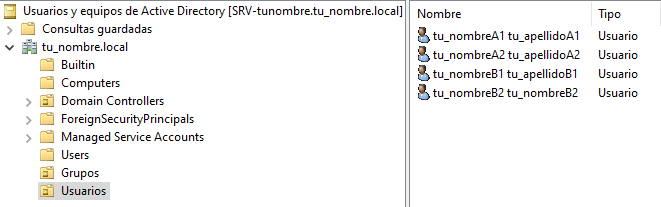
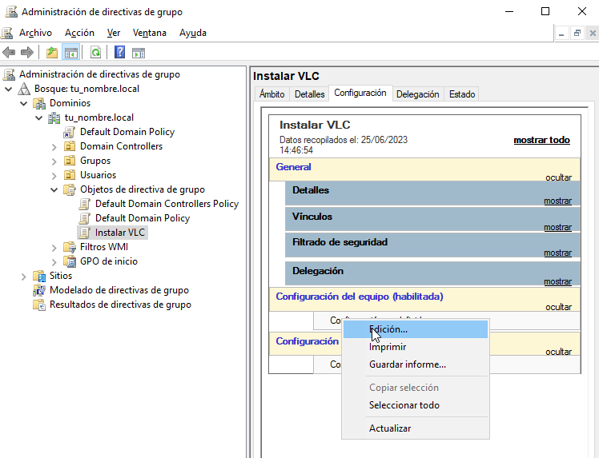
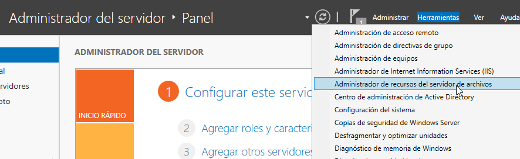

Casos prácticos : Active Directory#
Caso práctico: AD y DNS con adaptador puente#
Crea los siguiente clones enlazados con los adaptadores en modo puente:
Clon enlazado 1 de «Windows Server 2022» llamado SRV-tunombre con IP 10.4.X.Y/8, DHCP si es portatil
Clon enlazado 2 de «Windows 11» llamado WC5-tunombre 10.5.X.Y/8, DHCP si es portatil
Puedes ver la configuración en el siguiente vídeo
Instalación y configuración de Active Directory y DNS#
En SRV-tunombre vamos a Administrador del servidor/Panel/Agregar roles y características/Instalación basada en características o en roles Seleccionar un servidor del grupo de servidores, escoger SRV-tunombre/Marcar la casilla Servicios de dominio de Active Directory
Creación de un dominio:#
Partiendo de la ventana Resultados de la instalación de Active Directory, pulsar en Promover este servidor a controlador de dominio. (Si se había cerrado la ventana anterior es posible acceder a ella pulsando en el icono de advertencia de la barra de herramientas del Administrador del servidor)

De momento, el servidor SRV-tunombre no pertenece a ningún dominio. Tampoco existe un bosque al que agregar un nuevo dominio. Por lo tanto, el primer paso para formar el dominio tunombre.local es crear un nuevo bosque. Para ello seleccionar la opción Agregar un nuevo bosque. Tras escribir el nombre del dominio: tunombre.local, pulsar Siguiente. En capacidades del controlador del dominio, el Servidor de Sistema de nombres de dominio (DNS) y el Catálogo global (GC) deben estar marcados. Contraseña @lumn0
Verificar el nombre NetBIOS [1] tunombre y pulsar Siguiente
Si todo ha sido configurado correctamente, hacer clic en Instalar.
Por ultimo cuando se reinicie habilita las actualizaciones dinámicas, para ello en Inicio->Herramientas administrativas/DNS/expandir SRV-TUNOMBRE /expandir Zonas de búsqueda directa/ clic el botón derecho del ratón en tunombre.local/Propiedades/General/lista Actualizaciones dinámicas elegir sin seguridad y con seguridad, a continuación hacer clic en Aceptar.
Unidades Organizativas, usuarios y grupos#
La estructura lógica de Windows Server se basa en la utilización de dominios y unidades organizativas. En un dominio se puede crear una jerarquía de unidades organizativas, las cuales pueden contener usuarios, grupos, equipos, impresoras y carpetas compartidas, además de otras unidades organizativas.
Para crear de las unidades organizativas en Inicio/Herramientas administrativas/Usuarios y equipos de Active Directory dentro del domino tunombre.local crea las siguientes unidades organizativas (clic botón derecho del ratón -> Nuevo -> Unidad Organizativa) Usuarios y Grupos
Dentro de la UO Grupos, crea el grupo global de seguridad A y B
Dentro de la UO Ususarios, crea los usuarios:
tunombreA1
Nombre completo: tunombreA1 tuapellidoA1.
Contraseña @lumn0A1
Nombre de inicio de sesión del usuario: tunombreA1@tunombre.local
La contraseña nunca expira
Hazle miembro del grupo A
tunombreA2
Nombre completo: tunombreA2 tuapellidoA2
Contraseña @lumn0A2
Nombre de inicio de sesión del usuario: tunombreA2@tunombre.local
La contraseña nunca expira
Hazle miembro del grupo A
tunombreB1
Nombre completo: tunombreB1 tuapellidoB1.
Contraseña @lumn0B1
Nombre de inicio de sesión del usuario: tunombreB1@tunombre.local
La contraseña nunca expira
Hazle miembro del grupo B
tunombreB2
Nombre completo: tunombreB2 tuapellidoB2
Contraseña @lumn0B2
Nombre de inicio de sesión del usuario: tunombreB2@tunombre.local
La contraseña nunca expira
Hazle miembro del grupo B
Unir un equipo al dominio#
Vamos a unir WC5-tunombre al dominio tunombre.local, para ello:
Cambiamos el nombre de la maquina
Ponemos el DNS la ip del dominio SRV-tunombre.
Haz clic derecho en el botón «Inicio» y selecciona «Sistema > Información» en el menú desplegable.
En la ventana de «Sistema», haz clic en «Configuración avanzada del sistema» en el panel izquierdo.
Se abrirá la ventana de «Propiedades del sistema». Haz clic en la pestaña «Nombre de equipo» y luego en el botón «Cambiar».
En la siguiente ventana, verás la opción «Miembro de». Asegúrate de seleccionar la opción «Dominio» en lugar de «Grupo de trabajo».
Ingresa un nombre del dominio tunombre.local
Haz clic en «OK» para guardar los cambios. Es posible que se te solicite reiniciar el equipo para aplicar los nuevos ajustes.
Quitar el equipo del dominio#
Accede al equipo con una cuenta de administrador local.
Haz clic derecho en el botón «Inicio» y selecciona «Sistema» en el menú desplegable.
En la ventana de «Sistema», haz clic en «Configuración avanzada del sistema» en el panel izquierdo.
Se abrirá la ventana de «Propiedades del sistema». Haz clic en la pestaña «Nombre de equipo» y luego en el botón «Cambiar».
En la siguiente ventana, verás la opción «Miembro de». Asegúrate de seleccionar la opción «Grupo de trabajo» en lugar de «Dominio».
Ingresa un nombre de grupo de trabajo para el equipo. Por defecto, el grupo de trabajo suele ser «WORKGROUP», pero puedes ingresar un nombre diferente si lo deseas.
Haz clic en «OK» para guardar los cambios. Es posible que se te solicite reiniciar el equipo para aplicar los nuevos ajustes.
En el servicdor «Inicio/Herramientas administrativas/Ususarios y equipos de Active Directory/»
Selecciona tunombre.local, y quita los clientes que has sacado del dominio en la pestaña de Computers
Configurar una carpeta compartida#
Las carpetas y archivos en Windows permiten configurar los siguientes permisos:
Control total el usuario tiene control total sobre la carpeta y puede añadir, cambiar, mover y eliminar elementos. El usuario también puede agregar y quitar permisos de la carpeta y subcarpetas.
Modificar una combinación de lectura y escritura. El usuario también tiene la capacidad de eliminar los archivos dentro de la carpeta. También puede ver el contenido de las subcarpetas.
Leer y Ejecutar los usuarios pueden leer el contenido de los archivos y ejecutar los programas de la carpeta.
Vamos a compartir la carpeta C:\compartida alojada en nuestro servidor, con los permisos solo de lectura, para ello:
Con el botón derecho del ratón accedemos a las propiedades de la carpeta vamos a la pestaña de Compartir aqui en Uso compartido avanzado seleccionamos compartir esta carpeta.
En la misma pestaña de Compartir este mismo dialogo nos vamos a Compartir permisos y comprobamos que Todos solo con permisos de Lectura
Como podemos ver esta compartida en: \\SRV-TUNOMRE\compartida o \\10.4.100.100, si el cliente es linux podemos acceder smb://10.4.100.100/
Instalación de software utilizando directivas de grupo#
Vamos a instalar VideoLAN en formato msi [2]. Para ello lo bajamos y lo guardadmos dentro de la carpeta SYSVOL [3] C:\Windows\Sysvol
Para crear un objeto de directiva de grupo, abre la consola de administración de directivas de grupo (Group Policy Management Console) en el controlador de dominio Inicio/Herramientas administrativas de Windows/Administración de directivas de grupo. Crea un nuevo objeto de directiva de grupo (GPO) Instalar VLC

En la pestaña de Configuración/Configuración del equipo vamos a Edición
En Directiva Instalar/Configuración del equipo/Directivas/Configuración de software creamos un nuevo paquete

Especificar la ubicación del programa (.msi o .exe) dandole la ip y la carpeta compartida,para este caso usaremos la carpeta compartida que hemos creado, por lo general usaremos SYSVOL [3], lo siguiente será seleccionar una instalación asignada, es decir (se instala automáticamente cuando se inicia sesión) en el caso de seleccionar la instalación publicada (el usuario puede elegir instalarlo desde el Centro de software de Windows).
Haz un par de clientes más para nuestro dominio. Crea una nueva UO llamada Equipo y dentro crea otra llamada Despacho1, deja el cliente WC5-Tunombre fuera y dentro del Despacho1 el cliente WC6-Tunombre y WC7-Tunombre

En la consola de administración de Directivas de grupo, navega hasta Despacho1, haz clic derecho en la OU y selecciona Vincular un GPO existente

Los cambios en las políticas de grupo pueden requerir que el cliente se reinicie para que las configuraciones tengan efecto. Por otro lado si queremos aplicar nosotros mismos las directivas de grupo en los clientes de Windows, abre una ventana del símbolo del sistema (cmd) o PowerShell y ejecuta el comando gpupdate /force. Esto obligará al equipo a buscar y aplicar las nuevas directivas de grupo.
Footnotes
Unir un cliente Ubuntu al dominio#
Configura la IP 10.10.X.Y/8 (255.0.0.0), donde X.Y son parte de las ips de vuestros equipos, con gateway 10.0.0.2 y subred 10.0.0.0/8 en el caso de que tengas un portátil utiliza DHCP.
Cambia el DNS (ip windows server), haz que aparezca en /ets/hosts el nombre del dominio y sincroniza temporalmente los dos ordeandores.
Instalar los paquetes necesarios:
apt install sssd-ad sssd-tools realmd adcli
apt install krb5-user
#Reino predeterminado de la versión 5 de Kerberos:
TUNOMBRE.LOCAL
Deshabilitamos la resolución inversa de DNS (rdns = false) en /etc/krb5.conf
head -3 /etc/krb5.conf
[libdefaults]
default_realm = TUNOMBRE.LOCAL
rdns = false
Añadimos nuestro Ubuntu al AD:
sudo realm join --user=Administrador -v tunombre.local
Para que se cree el home de forma automatica cuando se loguea el usuario
pam-auth-update

Seleccionar otro usaurio

Tambien puedes conectarte por ssh
{kind=link}
Caso práctico: AD y DNS con red interna#
Crea los siguiente clones enlazados con los adaptadores en modo puente:
Clon enlazado 1 de «Windows Server 2022» llamado SRVInt-tunombre con IP 10.4.X.Y/8, DHCP si es portatil y un nuevo adaptador red para el servidor, le asignamos una red interna y le ponemos la dirección 172.16.0.10/16
Clon enlazado 2 de «Windows 11» llamado WC5Int-tunombre con un adaptador a una red interna, le asignamos la red 172.16.0.15/16 con puerta de enlace 172.16.0.10 y DNS 172.16.0.10
Clon enlazado 3 de «Windows 11» llamado WC6Int-tunombre con un adaptador a una red interna, le asignamos la red 172.16.0.16/16 con puerta de enlace 172.16.0.10 y DNS 172.16.0.10
Configurar servicio de enrutamiento#
Para configurar el servicio de enrutamiento vamos a:
Panel / Agregar roles y características
Seleccionamos nuestro servidor SRVInt-tunombre
En Roles de servidor marcamos la casilla de:
[x] Remote Access / Acceso remoto
En servicios de rol seleccionamos:
[x] DirectAccess and VPN(RAS)
[x] Routing
Para comfigurar servicio de enrutamiento vamos a Panel/Herramientas/Enrutamiento y Acceso remoto, seleccionamos nuestro servidor SRVInt-tunombre, presionamos el botón de la derecha del ratón y Configuramos y habilitamos el enrutamiento y acceso remoto seleccionando:
[x] Traduccion de direcciones de red (NAT)
Seleccionamos la tarjeta que tengamos en modo puente. (10.4.X.Y) o por (DHCP caso portatil)
[x] Configurar mas adelante el DHCP y el DNS
Configura el controlador de dominio#
Crea un controlador de dominio llamado empresa_tunombre.local y las siguientes unidades organizativas:
OU=Oficinas
OU=Madrid
OU=Ventas
OU=Marketing
OU=Administración
OU=Barcelona
OU=Ventas
OU=Marketing
OU=Administración
OU=Departamentos
OU=Recursos Humanos
OU=Finanzas
OU=IT
OU=Usuarios
OU=Empleados
OU=Contratistas

La OU Oficinas se utiliza para agrupar las unidades organizativas por ubicación geográfica.
Las OU Madrid y Barcelona se utilizan para agrupar los departamentos dentro de cada oficina.
La OU Departamentos se utiliza para agrupar las unidades organizativas por función.
La OU Usuarios se utiliza para agrupar las cuentas de usuario.
Ayuda: En el caso de querer borrar una OU que esta protegída contra el borrado accidental, en propiedades en la pestaña Objeto desmarcar dicha protección. En el caso de no ver esta pestaña, haz clic en ver en la barra de menú y selecciona Características avanzadas.
Configura los usuarios del sistema#
Crea el grupo de seguridad global Empleados dentro del UO Empleados y Contratistas dentro de su UO Contratistas. Dentro de cada unidad organizativa crea los siguientes usuarios:
UO Empleados
E01_tunombre perteneciente al grupo Empleados
E02_tunombre perteneciente al grupo Empleados
UO Contratistas
C01_tunombre perteneciente al grupo Contratista
C02_tunombre perteneciente al grupo Contratista
Directivas de passwords#
Crear una nueva directiva de password sobre el grupo Empleados y Contratistas, para ello abre el Centro de administración de Active Directory selecciona tunombre (local)/System/Password Settings Container

Nuevo/Configuración de contraseña

Dentro del Centro de administración de Windows Server, puedes encontrar una sección para configurar las políticas de contraseña.
Nombre: Es el nombre que le asignas a la política de contraseña para identificarla fácilmente. Puedes darle un nombre descriptivo que refleje los requisitos o el propósito de la política.
Precedencia: La precedencia se refiere al orden en el que se aplican las políticas de contraseña cuando existen múltiples políticas configuradas. Este campo te permite establecer la prioridad o el nivel de precedencia de la política de contraseña en relación con otras políticas. La política con la precedencia más alta tiene prioridad.
Longitud mínima: Especifica la longitud mínima que deben tener las contraseñas para cumplir con la política. Puedes establecer un valor numérico para indicar el número mínimo de caracteres requeridos.
Complejidad de la contraseña: Este campo te permite configurar si las contraseñas deben cumplir con requisitos de complejidad. Puedes habilitar o deshabilitar la complejidad y definir qué elementos se requieren, como letras mayúsculas, letras minúsculas, números y caracteres especiales.
Duración máxima de la contraseña: Aquí puedes especificar el tiempo máximo que una contraseña puede estar en uso antes de que los usuarios deban cambiarla. Puedes establecer una cantidad de días después de los cuales se requiere un cambio de contraseña.
Historial de contraseñas: Este campo define el número de contraseñas anteriores que los usuarios no pueden reutilizar. Por ejemplo, si estableces un historial de contraseñas de 5, los usuarios no podrán usar ninguna de las últimas 5 contraseñas que hayan utilizado.
Bloqueo de cuenta por intentos fallidos: Puedes configurar el número máximo de intentos fallidos de inicio de sesión permitidos antes de que una cuenta de usuario se bloquee temporalmente. Esto ayuda a proteger las cuentas contra ataques de fuerza bruta.

Intalar programas y cambiar el fondo de escritorio por GPO#
Vamos a establecer un fondo de pantalla a través de una GPO y a instalar VideoLaN en los ordenadores que se encuentran en la UO Barcelona / Administración, es decir WC5Int-tunombre y WC6-tunombre

En Inicio/Herramientas administrativas de Windows/Administración de directivas de grupo creamos una GPO llamada FondoPantalla y otra que se llame intalar VLC
Utilizaremos la carpeta C:\Windows\SYSVOL [3], esta carpeta se comparte de forma predeterminada en los controladores de dominio, lo que permite a los clientes y otros controladores de dominio acceder a los archivos de políticas de grupo y scripts de inicio y cierre.
En el Objeto de directiva de grupo (GPO) Instalar VLC, en la pestaña de Configuración/Configuracióndel equipo vamos a Edición, en Directivas Intalar VLC/Configuración del equipo/Directivas/Configuración de software/Instalación de sofware/ creamos un nuevo paquete y especificar la ubicación del programa (.msi o .exe) y seleccionamos el método de implementación asignada
Para cambiar el fondo de pantalla, editamos la directiva FondoPantalla, y en Configuración de usuario/Directivas/Plantillas administrativas/Active Desktop/Tapiz del escritorio, lo habilitamos

Por ultimo vamos a Administracion de directivas de grupo/ buscamos Oficina/Barcelona/Administración vinculamos las dos GPO existenetes
Configuración de carpetas compartidas#
Crea las siguientes carpetas compartidas con los siguientes permisos:
C:\compartida\empleados\E01_tunombre (E01_tunombre tiene permisos de lectura y escritura)
C:\compartida\empleados\E01_tunombre (E02_tunombre tiene permisos de lectura y escritura)
C:\compartida\empleados\empleados_compartida (al grupo de empleados tiene permiso de lectura)
C:\compartida\contratista\C01_tunombre (C01_tunombre tiene permisos de lectura y escritura)
C:\compartida\contratista\C01_tunombre (C02_tunombre tiene permisos de lectura y escritura)
C:\compartida\contratista\contratista_compartida (al grupo de contratista tiene permiso de lectura)
Montaje de una unidad#
Queremos que se monten de forma automatica la carpeta contratista_compartida en h: y la carpeta empleados_compartida i: para ello copiamos el siguiente script llamado montar.bat en \\SRVInt-tunombre\NETLOGON o directamente en C:WindowsSYSVOLsysvolempresa_tunombre.localscripts
net use h: \\SRVInt-tunombre\contratistas_compartida
net use i: \\SRVInt-tunombre\empleados_compartida
Vamos a los usuarios en los que queremos que se monten las unidades, Usuarios y equipos del AD / Usuarios / Empleados / E02_tunombre / propiedades y en la pestaña de perfil lo metemos en el Script de inicio de sesión
Perfil móvil#
Vamos a crear un perfil movil a los contratistas, para ello primero creamos una carpeta compartida llamada Perfiles con acceso de escritura y lectura para todos los usuarios.
En Usuarios y equipos de Active Directory, En la ventana de propiedades de la cuenta, hacemos clic sobre la solapa Perfil. En ella, debemos dar valor al cuadro de texto Ruta de acceso al perfil. El contenido seguirá el siguiente formato: \\SRVInt-tunombre\Perfiles\C01_tunombre, de forma mas general podríamos cambiar C01_tunombre por %username%

Aplicar cuota#
Lo primero es agregar los roles y caracteríscas necesarias, en Administrador del servidor / Agregar roles y caracteristicas, en la lista de roles, dentro de «Servidor de archivos y almacenamiento / Servidor de iSCSI y archivo / Administrador de recursos del servidor de archivos»

Para activar las cuotas vamos a:
Creamos una nueva plantilla llamada Límite 10MB tunombre, con Advertencia al 20 y 50%

Aplica la plantilla creada en la carpeta compartida en la que se encunetran los perfiles móviles, cuando lo apliques no olvides marcar Aplica la plantilla aut. y crear cuotas en subcarpetas nuevas y existentes.
Inicia la sesión con algún usuario, copia algún archivo para que exceda la cuota, cuando cierres la sesisión te dara un error en la sincronización del perfil, vuelve a loguearte con el usuario y abre el visor de eventos:

Perfil Obligatorio#
Un perfil obligatorio es un tipo especial de perfil de usuario que se carga desde una ubicación específica en lugar de desde la carpeta de perfil de usuario normalmente utilizada. Esto significa que los cambios realizados por el usuario durante la sesión no se guardan entre sesiones.
Creamos un nuevo perfil móvil, vamos a llamarlo usuario_plantilla : \\SRVInt-tunombre\Perfiles\usuario_plantilla
Iniciamos sesión en el cliente con el usuario plantilla, hacemos un link simbolico del block de notas en el escriotrio, creamos una carpeta llamada DOC, y cierra la pestaña sesión para que se cree la carpeta usuario_plantilla.v6 en la compartida de Perfiles
Creamos en el servidor un nuevo grupo llamado perfilobligatorio
Cambiamos los permisos de seguridad a la carpeta usuario_plantilla.v6, ponemos al grupo de Administradores, reemplazamos propietario en contenedores y objetos. Añadimos tambien al grupo de perfilesobligatorios y le damos control total, recordar darlo con herencia.
Entramos en la carpeta usuario_plantilla.v6, activamos los elementos ocultos, si hay una carpeta en AppData llamada localLow o Roaming la eliminamos.
Abrimos el registro y vamos a HKEY_USERS, vamos a archivo, cargamos subarbol/usario_plantilla elegimos el archivo NTUSER.DAT, abrimos y le ponemos nombre a la clave (perfilobligatorio) y le damos permisos al grupo perfileobligatorio, le damos control total con herencia. Finalmente le damos archivo y descargamos el subárbol.
En el usuario_plantilla.v6 cambiamos NTUSER.DAT NTUSER.MAM.
Creamos el uausio C03_tunombre, le asignamos el Perfil \\srvint-tunombre\Perfiles\usuario_plantilla y le metomos en el grupo perfiles obligatorios